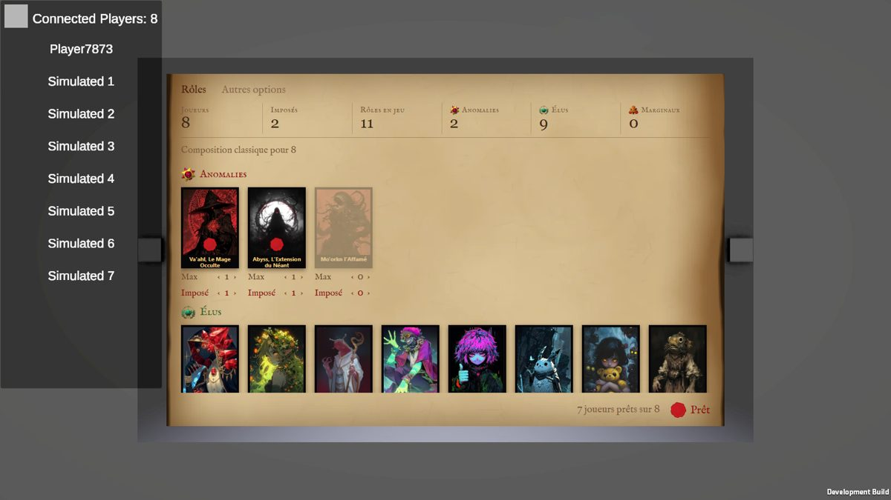

Tes votes du tour 3 : S8 (le parchemin) 👍, mais il manquait l'interface des compositions prédéfinies
(l'ancien « ★ Preset classique » et sa liste « Autres presets… ») ; les mots W1 et W2 👍, W3 👎.
L'original : bouton + pastille + liste

S8 du tour 3
Ici, trois façons de montrer et de choisir une composition, toutes sur S8. Ce qu'elles font, comme dans le
jeu : choisir une composition remplace les réglages ; toucher un « ‹ › » ensuite la fait passer en
« Personnalisée » ; on peut revenir à une composition à tout moment.
Aujourd'hui le jeu n'a qu'une composition par nombre de joueurs (Classique). « Débutants » et « Chaos »
sont des exemples pour voir la liste quand il y en aura plusieurs ; noms et contenus à fixer par le game
design.
Les mots : W1 et W2 t'ont plu tous les deux. Le bouton ci-dessous change les mots de tous les écrans, pour
les comparer en place (vote en section 2).
Mots :
1. Les compositions prédéfinies
Touche le nom de la composition (P1), une composition (P2, P3), puis un « ‹ › » pour voir « Personnalisée ».
P1Une ligne, la liste se déroule
Sous les compteurs, une seule ligne : « Composition : Classique ▾ ». La toucher déroule la liste
des compositions pour ce nombre de joueurs, chacune avec sa phrase de description (lisible, contrairement à
une infobulle). Le plus discret, et le plus proche de l'original. La liste est ouverte sur la capture.
P2Les compositions en sommaire
Toutes les compositions écrites sur une ligne, comme un sommaire ; la choisie est soulignée à
l'encre, sa description à droite. Un toucher pour changer. « Personnalisée » apparaît au bout dès qu'on touche
un réglage. Tient jusqu'à 4 ou 5 compositions.
P3Les compositions dans la marge
Une colonne à gauche de la page, comme une marge de livre : les compositions l'une sous l'autre
avec leur description, la choisie marquée d'un trait rouge. Toujours visible, sans menu ; la grille perd une
colonne de cartes (6 au lieu de 8).
2. Les mots
Compare avec le bouton « Mots » en haut de la page.
W1Max / Imposé
Compteurs « Imposés », « Rôles en jeu » ; sous une carte « Max », « Imposé ». Les termes que
les joueurs connaissent déjà.
W2Au plus / Au moins
Compteurs « Garantis », « Rôles possibles » ; sous une carte « Au plus », « Au moins » ; en bas
« 3 rôles resteront factices. ».
W4W1, plus la phrase des factices de W2
Les termes de W1 partout, et en bas « 3 rôles resteront factices. » à côté des joueurs prêts.